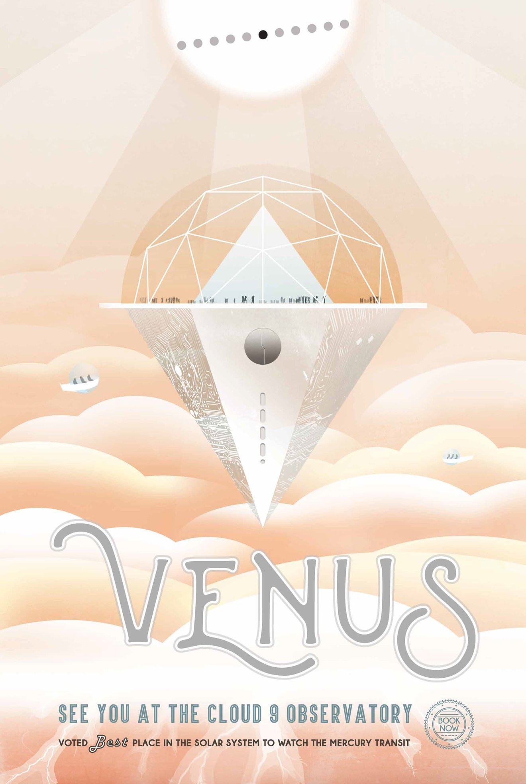

NASA's Mars Exploration Program seeks to understand whether Mars was, is, or can be a habitable
world. Missions like Mars Pathfinder, Mars Exploration Rovers, Mars Science Laboratory and Mars
Reconnaissance Orbiter, among many others, have provided important information in understanding of
the habitability of Mars. This poster imagines a future day when we have achieved our vision of
human exploration of Mars and takes a nostalgic look back at the great imagined milestones of Mars
exploration that will someday be celebrated as “historic sites.”